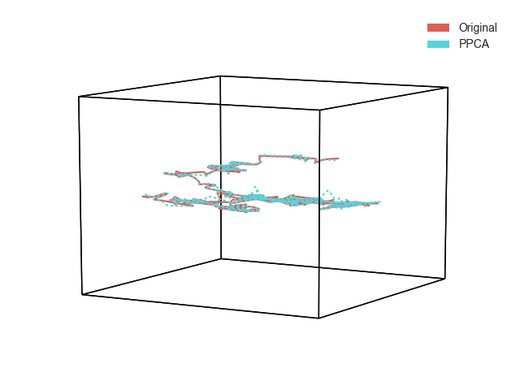

When you pass a matrix with with missing data, hypertools will attempt to fill in the values using probabalistic principal components analysis (PPCA). Here is an example where we generate some synthetic data, remove some of the values, and then use PPCA to interpolate those missing values. Then, we plot both the original and data with missing values together to see how it performed.
# Code source: Andrew Heusser
# License: MIT
from scipy.linalg import toeplitz
import numpy as np
from copy import copy
import hypertools as hyp
K = 10 - toeplitz(np.arange(10))
data1 = np.cumsum(np.random.multivariate_normal(np.zeros(10), K, 250), axis=0)
data2 = copy(data1)
missing = .1
inds = [(i,j) for i in range(data2.shape[0]) for j in range(data2.shape[1])]
missing_data = [inds[i] for i in np.random.choice(int(len(inds)), int(len(inds)*missing))]
for i,j in missing_data:
data2[i,j]=np.nan
hyp.plot([data1,data2],linestyle=['-',':'], legend=['Original', 'PPCA'])
Total running time of the script: ( 0 minutes 0.063 seconds)